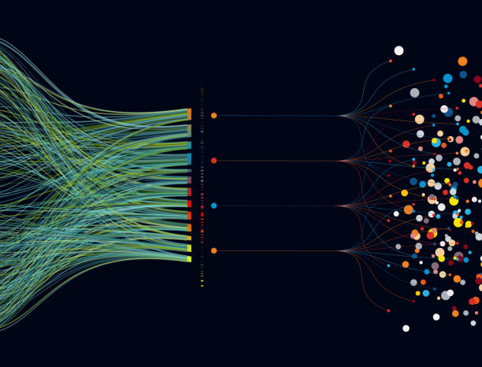
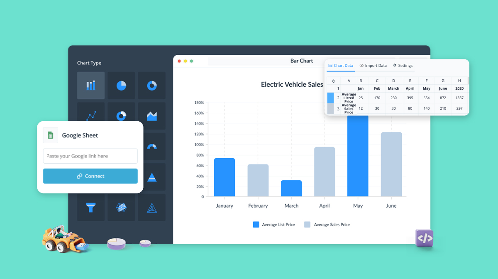

Utilizing SQL, I performed comprehensive data cleaning on a dataset focused on properties.
Through strategic SQL queries, I efficiently populated missing fields, disaggregated data into distinct columns for better analysis, and eliminated duplicate entries.
This process ensured the dataset's integrity and enhanced its usability for subsequent analytical tasks.
Leveraging SQL, I conducted a thorough data exploration exercise utilizing COVID-19 data. Employing advanced SQL techniques such as Common Table Expressions (CTEs) and temporary tables, I performed insightful calculations including cases versus deaths ratios, deaths compared to population statistics, and identified countries with the highest death count relative to their population.
By adeptly joining tables and employing temporary data structures, I extracted valuable insights to understand the pandemic's impact across different regions with a focus on both quantitative and proportional analysis.

In this Tableau project, I've meticulously analyzed Airbnb listings, categorizing them by postcode and the number of bedrooms available. Additionally, I've presented a revenue timeline to showcase the earnings over a specific period.
Through intuitive visualizations, you can explore the distribution of listings across different areas and understand the correlation between bedroom count and revenue generation. Dive into the interactive dashboards to glean valuable insights into the Airbnb market trends and make informed decisions.

Leveraging the power of Microsoft Excel, I conducted a comprehensive analysis of coffee sales, customer data, and inventory records. Through meticulous data cleaning and analysis, I transformed raw data into actionable insights.
The culmination of this effort was the creation of an intuitive dashboard, designed to be user-friendly even for non-technical colleagues.
This dashboard empowers decision-makers to access critical information effortlessly, enabling informed decisions regarding sales strategies, inventory management, and customer engagement.

In this Power BI project, I extracted insights from survey data focusing on respondents' happiness levels regarding work-life balance and salary satisfaction.
By visualizing key metrics such as work-life balance happiness, salary satisfaction, and average salary, I provided stakeholders with a comprehensive understanding of employee sentiments.
Through interactive visualizations and dynamic filtering options, users can explore trends, correlations, and outliers, enabling organizations to make data-driven decisions to enhance employee well-being and organizational performance.